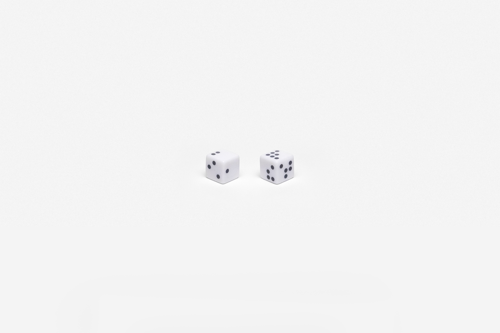
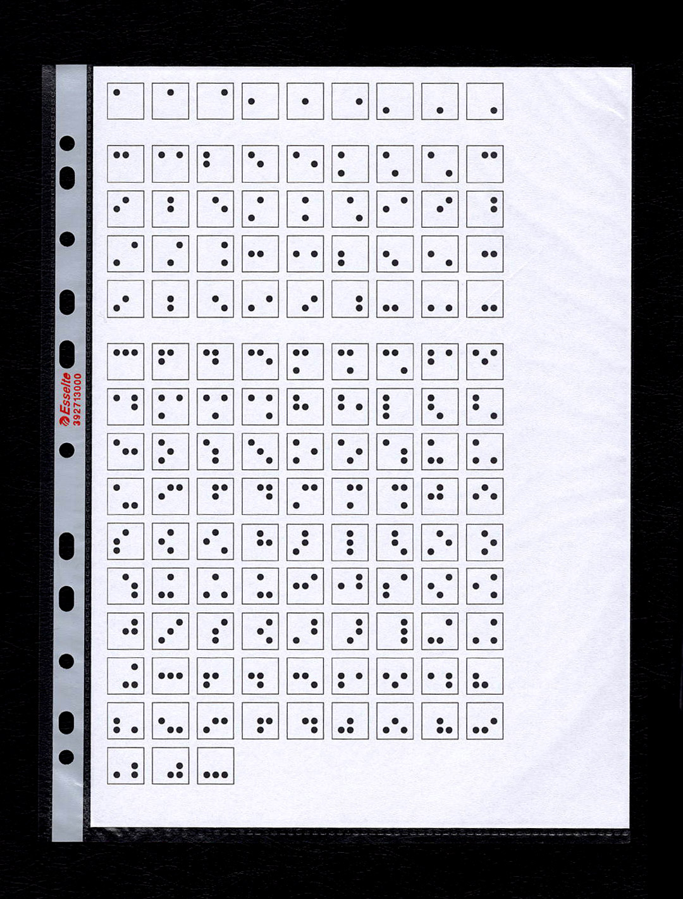
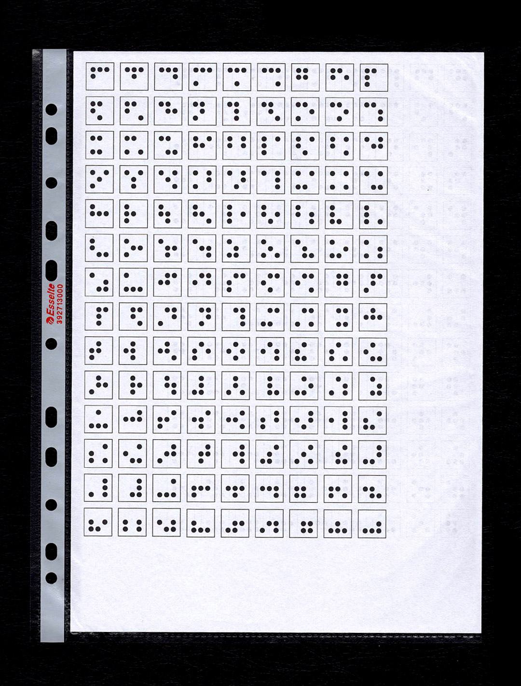
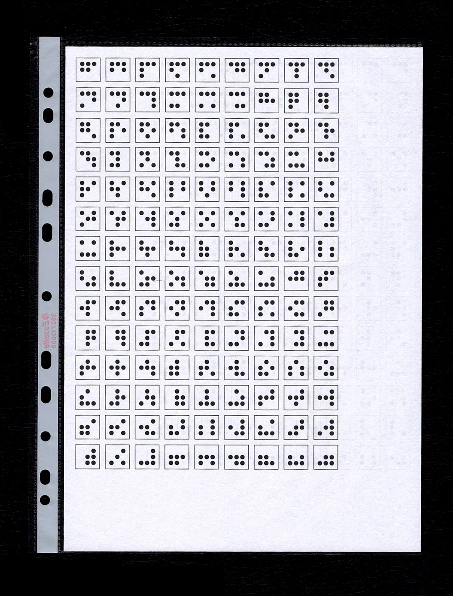
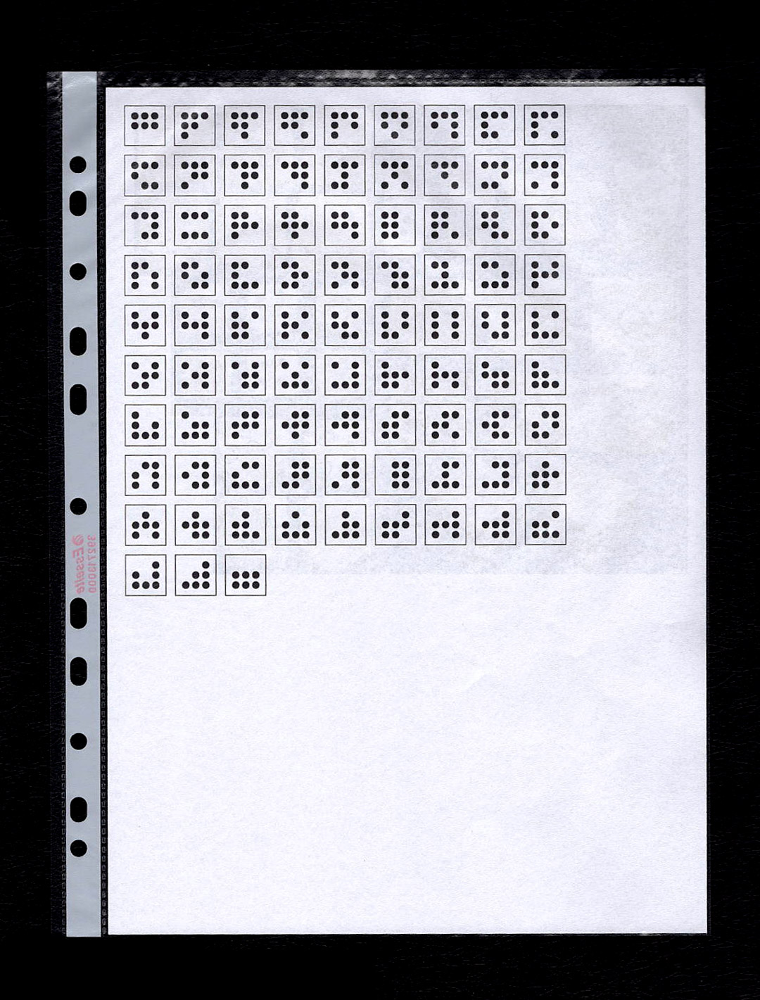

Dadi in plastica bianca stampati a laser, si presentano come oggetti
alterati, altri: sono una alternativa tra le tante possibili. Ogni cosa
potrebbe essere qualunque altra, ma si presenta come assoluta: "Un
miracolo che non stupisce quanto dovrebbe: la mano ha in verità meno di
sei dita, però più di quattro". (Szymborska).




